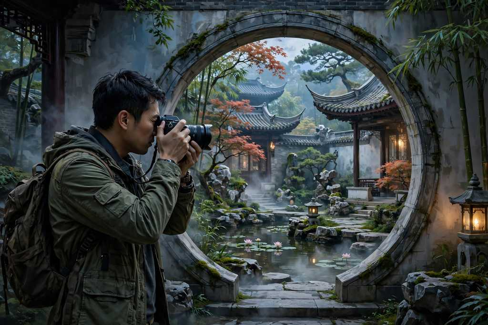

The open-source PhotoCraft Web app, right in your browser — layers, brushes and PSD support. No account, no desktop install.
Start editing See how it worksFree to use · no subscription, payment or account
The editor downloads on your first visit — nothing to install on your computer.
Choose Open and select a working copy from your device — no account to create.
File → Save As for a working PSD, File → Export → Export As for a finished PNG.
Your files stay with you — processed locally, with no upload or cloud-storage service on this site.
This hosted PhotoCraft Web build opens without a subscription, payment or account.